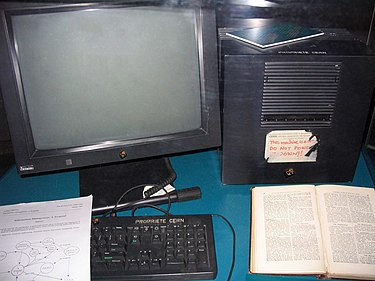

Äldre versionen av internett skapades av USA:s militära forskningsanstalt Advanced Research Projects Agency år 1969. Syftet med det var att experimentera med tekniker för datanät, bland annat hantering av avbrott och möjlighet att kringgå utslagna nätverksnoder. I början av 1980-talet tog universiteten,första i USA, över och skapade ett datanät mellan sig med denna teknik. Det spred sig ganska fort till andra länders universitet och på så sätt kunde de regelbundet ta kontakt med några andra universitet.
Under 1990-talet började privatpersoner använda nätet i större utsträckning, då kommersiella operatörer erbjöd förbindelser åt hemanvändare och World Wide Web slog igenom. Den första webbläsaren skapades av Tim Berners-Lee år 1990.
